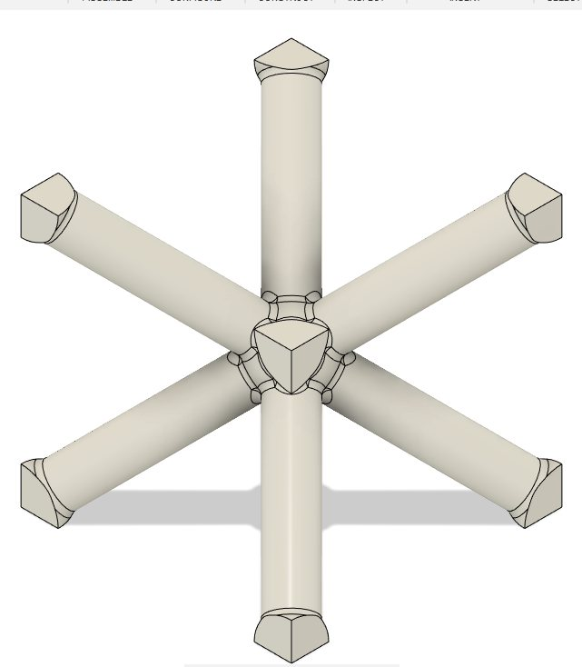
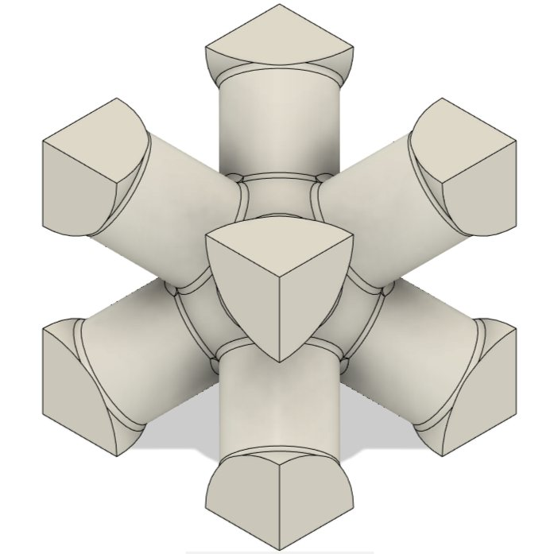

BCC · 12% and 50%
Body-centred cubic
- Uniform struts, equal in every direction
- Nodes keep a fixed orientation relative to each other
- Nodes treated as rigid; node centres follow an affine displacement field